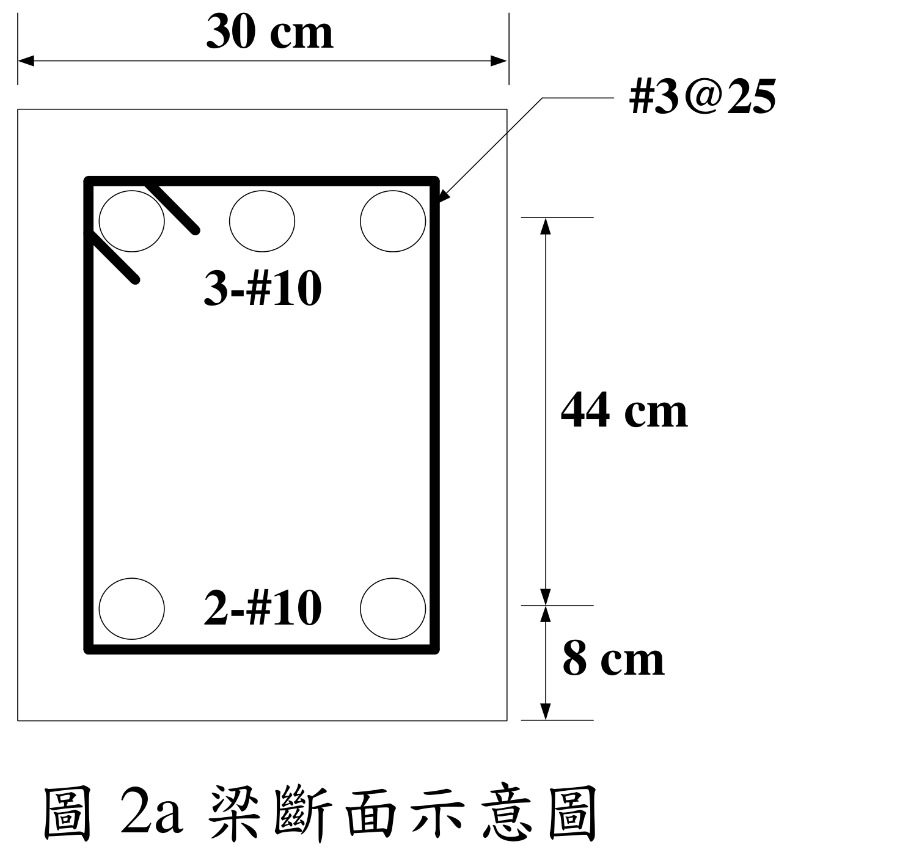
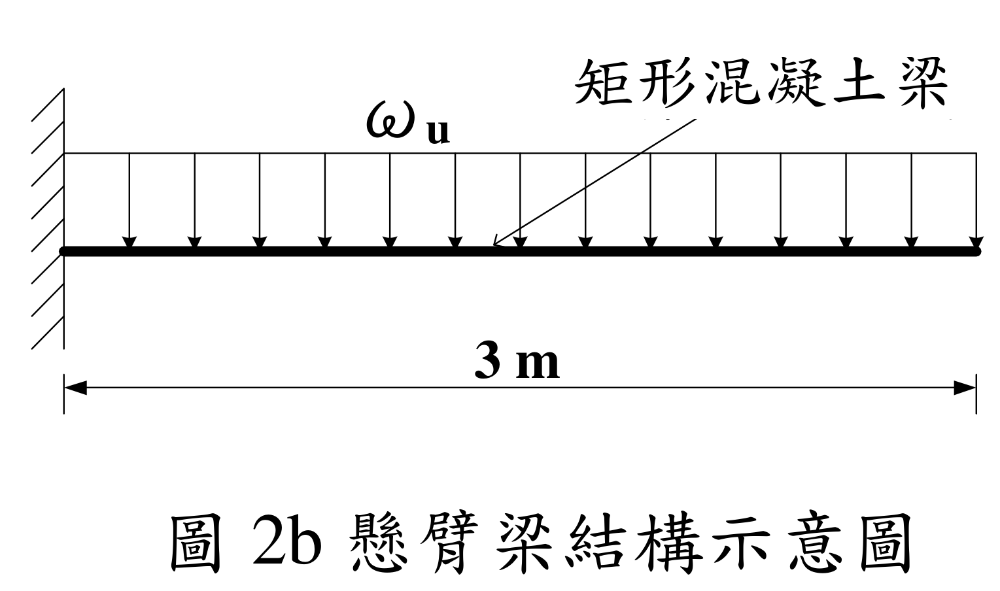
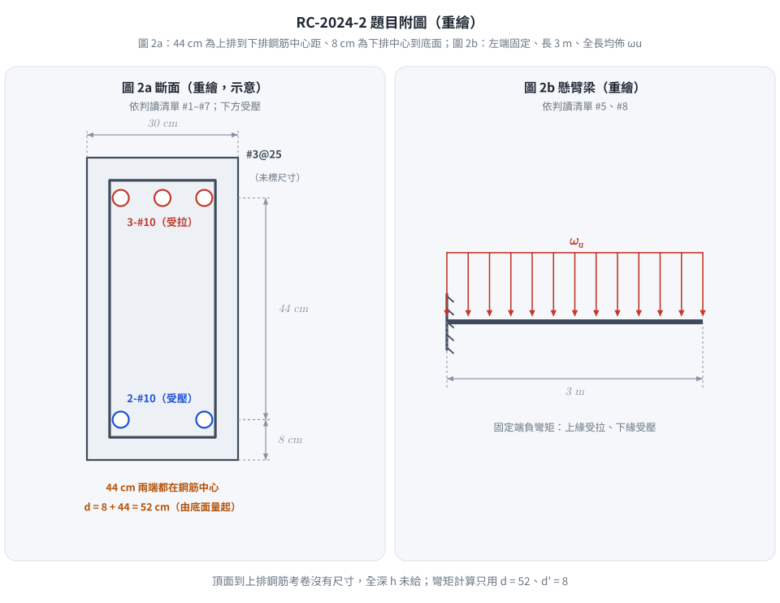

📄 題目正本：考卷原文・附圖・判讀清單（已確認）
RC-2024-2 題目正本
本檔只記錄考卷上寫了什麼、圖上畫了什麼，不含任何解法。解析見同資料夾
RC-2024-2.md。
判讀清單已經使用者確認（凍結）；本檔原則上不再修改（改動須回考卷原圖並記 log）。
| 項目 | 內容 |
|---|---|
| 考卷 | raw/exams/RC-2024_鋼筋混凝土設計與預力.pdf 第 2 頁（頁次 3－2），第二題 |
| 考年 | 民國 113 年（2024） |
| 配分 | 25 分 |
| 附圖 | RC-2024-2-fig-3.png（圖 2a 梁斷面示意圖）、RC-2024-2-fig-4.png（圖 2b 懸臂梁結構示意圖），皆 500 dpi 重新擷取；舊證據圖 RC-2024-2-fig-1.png、-fig-2.png 壓有滑鼠游標，保留不刪 |
| 判讀狀態 | 已確認（2026-11-13 使用者確認；#1、#3 使用者確認 d = 52（推翻解析 d = 44）；轉錄 2026-11-13，PyMuPDF 110 dpi 全頁目視＋抽出文字核對，附圖 400／500 dpi＋PDF 向量座標；盲讀後才比對既有解析） |
1. 考卷原文（逐字）
二、懸臂梁斷面示意圖如圖 2a，若採用中強度鋼筋（fy = 4200 kgf/cm²、Es = 2.04×10⁶ kgf/cm²）、#10（D32）與 #3（D10）鋼筋之斷面積分別為 8.14 cm²、0.71 cm²；混凝土性質（f'c = 210 kgf/cm²、εu = 0.003）；下方斷面為受壓力，若考慮壓力鋼筋之貢獻，請計算採斷面彎矩強度及壓力鋼筋應力大小。若相同斷面之懸臂梁長度為 3 m（示意圖如圖 2b），請計算最大因數化均佈載重 ωu（含自重、靜載重、活載重等）。（示意圖未依照比例尺繪製）（25 分）
（「請計算採斷面彎矩強度」照考卷原文，「採」字疑為贅字或漏字。）
2. 考卷給的公式、附表與參數
- 卷首：依據與作答規範：中國土木水利工程學會「混凝土工程設計規範與解說」（土木 401-112），未依上述規範作答，不予計分。
- 題文數值：$f_y=4200$、$E_s=2.04\times10^6$、$f'_c=210$ kgf/cm²、$\varepsilon_u=0.003$；#10 面積 8.14 cm²、#3 面積 0.71 cm²；懸臂長 3 m。
- 沒有給：梁全深 $h$（拉力筋到頂面沒有標尺寸）、#10 的直徑、$\beta_1$、$\phi$。
- 卷首注意事項：㈠可以使用電子計算器；㈡不必抄題；㈢除專門名詞或數理公式外，應使用本國文字作答。
3. 附圖


圖面文字照錄：圖 2a 30 cm、#3@25、3-#10、2-#10、44 cm、8 cm、圖 2a 梁斷面示意圖；圖 2b ωu、矩形混凝土梁、3 m、圖 2b 懸臂梁結構示意圖。
4. 判讀清單
「把握」標不確定者請優先確認；解讀類項目（題目用字的意思）另標「解讀」。
| # | 項目 | 判讀 | 圖上／題文依據 | 把握 |
|---|---|---|---|---|
| 1 | 44 cm 段 | 上排鋼筋中心到下排鋼筋中心（不是受壓面到拉力筋） | 400／500 dpi 目視：44 cm 上端延伸線對齊上排圓心、下端對齊下排圓心。PDF 向量：上端延伸線 y = 279.2，上排圓心 y = 280.1；下排圓心 y = 371.4；8 cm 下端 y = 397.7＝斷面底 397.8 | 確定（使用者選擇：44 cm 為兩排鋼筋中心距） |
| 2 | 8 cm 段 | 下排鋼筋中心到斷面底面 → $d'=8$ cm | 同上 | 確定 |
| 3 | 有效深度 | 受壓面（底面）到拉力筋（上排）＝$8+44=52$ cm | #1＋#2 | 確定（使用者選擇：d = 52、d' = 8） |
| 4 | 全深 $h$ | 考卷沒有給（頂面到上排鋼筋無尺寸；圖未依比例，頂部畫法與底部對稱但不能據以推 $h$） | 圖上無尺寸 | 確定 |
| 5 | 受力方向 | 懸臂負彎矩：上排 3-#10 為拉力筋、下排 2-#10 為壓力筋 | 題文「下方斷面為受壓力」；圖 2b 固定端在左 | 確定 |
| 6 | 斷面寬 | $b=30$ cm | 30 cm 尺寸線對齊外框 | 確定 |
| 7 | 箍筋 | #3@25（D10，0.71 cm²），彎矩計算不需要 | 圖上標註；題文 | 確定 |
| 8 | 懸臂 | 長 3 m，左端固定、右端自由，全長均佈 $\omega_u$（已含自重、靜載、活載的因數化合計） | 圖 2b；題文 | 確定 |
| 9 | 所求 | ①考慮壓力筋的彎矩強度（題文「採斷面彎矩強度」未寫明 $M_n$ 或 $\phi M_n$）與壓力筋應力；②最大 $\omega_u$ | 題文 | 不確定（解讀）；使用者確認：Mn 與 φMn 並列作答 |
| 10 | 考卷沒有給 | $h$、#10 直徑、$\beta_1$、$\phi$ | 全題 | 確定 |
轉錄：2026-11-13（RC-U1-1 題目正本推廣・批 2）
確認：2026-11-13 使用者確認（RC-U1-1 題目正本推廣・批 2，關卡一）
考題編號：RC-2024-2
主分類： RC-U1-1 RC 梁彎矩強度分析與設計
副分類： 無
設計法： USD 強度設計法
標籤： 雙筋梁 壓力鋼筋應力 壓力鋼筋未降伏 懸臂梁 因數化均佈載重 標稱彎矩強度 應變相容 尺寸鏈判讀 d=52
1. 題目（考卷原文見題目正本）
考卷原文、公式／附表、附圖與判讀清單（已確認）見
RC-2024-2-problem.md。本節只列解題時最容易讀錯的地方與本解使用的記號；題意以題目正本為準。

重繪自考卷圖 2a、2b，依題目正本判讀清單。圖上把 44 cm 的兩端畫在兩排鋼筋中心上——這張圖攔下「把 44 cm 當成有效深度 d」：受壓面（底面）到拉力筋的距離是 8 + 44 = 52 cm。
常見誤讀
| 項目 | 正確判讀 | 常見誤讀 |
|---|---|---|
| 44 cm 尺寸 | 上排鋼筋中心到下排鋼筋中心（判讀 #1） | 當成受壓面到拉力筋的 $d$（本解 2026-11-13 前即誤讀為 $d = 44$） |
| 有效深度 | $d = 8 + 44 = 52$ cm，$d' = 8$ cm，皆由底面（受壓面）量起（判讀 #3） | $d = 44$；或由頂面量起 |
| 全深 $h$ | 考卷沒有給（頂面到上排鋼筋無尺寸） | 由圖面比例或 $8+44$ 推成 $h = 52$ |
| 受力方向 | 懸臂負彎矩：上排 3-#10 受拉、下排 2-#10 受壓 | 依一般簡支梁習慣把下排當拉力筋 |
| 所求強度 | 題文「採斷面彎矩強度」未寫明，本解 $M_n$ 與 $\phi M_n$ 並列（判讀 #9） | 只答其一 |
本解記號： $A_s$ = 上排 3-#10 = 24.42 cm²（拉力）；$A'_s$ = 下排 2-#10 = 16.28 cm²（壓力）；$c$ 由底面量起；$L$ = 300 cm。
2. 考題核心精神與出題者意圖 (Core Concepts & Examiner's Intent)
核心觀念： 雙筋梁分析，重點在壓力鋼筋是否降伏的判斷與迭代求解。
出題意圖：
- 測試是否能先假設壓力鋼筋降伏，再用應變相容驗證（本題壓力鋼筋不降伏）
- 懸臂梁的方向感——底部壓力代表固定端的負彎矩區，d 與 d' 從壓力面量起
- 由 $\phi M_n$ 推算最大因數化均佈載重（懸臂梁力矩公式）
3. 解題戰略地圖與陷阱分析 (Strategic Roadmap & Trap Analysis)
作戰計畫：
Step 1：假設壓力鋼筋降伏 → 求 a → 求 c → 檢核 ε's
Step 2：ε's < εy → 壓力鋼筋不降伏 → 列應變相容方程式
Step 3：解二次方程求 c → 算 f's、a
Step 4：驗算拉力鋼筋確實降伏 (εt > εy)
Step 5：算 Mn、φMn
Step 6：懸臂梁 Mu = ωu × L²/2 → 求 ωu
關鍵陷阱：
| # | 陷阱 | 正確做法 |
|---|---|---|
| ① | 假設壓力鋼筋降伏，c = 7.52 cm < d' = 8 cm → 矛盾 | 先驗算 $c$ 與 $d'$ 大小，矛盾則重解（應變相容法） |
| ② | 懸臂梁力矩公式搞錯：Mu = ωuL（點載）vs $\omega_u L^2/2$（均佈） | 均佈：$M_u = \omega_u L^2/2$ |
| ③ | 把圖 2a 的 44 cm 當成 $d$ | 44 cm 是兩排鋼筋中心距；$d = 8 + 44 = 52\ \text{cm}$，$d' = 8\ \text{cm}$，均自底部（壓力面）量 |
| ④ | φ 值用錯（應查 εt 確認拉力控制） | $\varepsilon_t = 0.0085 > 0.005$ → 拉力控制 → $\phi = 0.90$ |
3.5 變數層次分析（Variable Hierarchy Analysis）
複習提示：第一次解題後，在每個卡住的知識點旁標記
⚠；第二次複習時只看有⚠的項目。
最終目標
求斷面 φMn 與壓力鋼筋應力 f's → 推導最大因數化均佈載重 ωu
本題關鍵公式鏈
$$\text{Step 1（假設降伏驗算）：} a_0 = \frac{(A_s - A'_s)f_y}{0.85 f'_c b} \rightarrow c_0 = \frac{a_0}{\beta_1} \xrightarrow{\text{若 }c_0 < d'} \text{壓力筋未進入壓力區 → 應變相容}$$
$$\text{Step 2（應變相容）：} 0.85f'_c b \beta_1 c + A'_s E_s \varepsilon_u \frac{c-d'}{c} = A_s f_y \Rightarrow \boxed{c}$$
$$\text{Step 3：} f'_s = E_s \varepsilon_u \frac{\boxed{c}-d'}{c},\quad M_n = 0.85f'_c b \boxed{a}\left(d-\frac{\boxed{a}}{2}\right) + A'_s \boxed{f'_s}(d - d')$$
$$\text{Step 4：} \phi M_n \geq M_u = \omega_u \frac{L^2}{2} \Rightarrow \omega_{u,\max} = \frac{2\phi M_n}{L^2}$$
L1：題目直接給定
| 符號 | 數值 | 說明 |
|---|---|---|
| $b$ | 30 cm | 梁寬 |
| $d$ | 8 + 44 = 52 cm | 壓力面（底）→ 拉力筋（頂）距離（圖 2a 尺寸鏈相加，判讀 #3） |
| $d'$ | 8 cm | 壓力面（底）→ 壓力筋（底部鋼筋）距離 |
| $A_s$ | 3×8.14 = 24.42 cm² | 頂部拉力鋼筋（3-#10） |
| $A'_s$ | 2×8.14 = 16.28 cm² | 底部壓力鋼筋（2-#10） |
| $f'_c$ | 210 kgf/cm² | 混凝土抗壓強度 |
| $f_y$ | 4200 kgf/cm² | 鋼筋降伏強度 |
| $E_s$ | 2.04×10⁶ kgf/cm² | 鋼筋彈性模數 |
| $\varepsilon_u$ | 0.003 | 混凝土極限壓應變 |
| $L$ | 300 cm | 懸臂梁長度 |
L2：需知識點推導
Step A：先假設壓力鋼筋降伏（快速檢核）
| 符號 | 公式/來源 | 卡關? |
|---|---|---|
| $\beta_1$ | $f'_c=210 < 280 \Rightarrow \beta_1=0.85$ | |
| $a_0$（試算） | $(A_s - A'_s)f_y / (0.85f'_c b) = 8.14\times4200/(0.85\times210\times30)=6.39\ \text{cm}$ | |
| $c_0$（試算） | $a_0/\beta_1 = 6.39/0.85 = 7.52\ \text{cm}$ | |
| 判斷 | $c_0 = 7.52 < d' = 8\ \text{cm}$ → 壓力筋在拉力區，假設錯誤 |
Step B：應變相容求 c
| 符號 | 公式/來源 | 卡關? |
|---|---|---|
| 方程式 | $4551.75c^2 - 2930.4c - 797{,}069 = 0$ | |
| $c$ | 正根：$c = 13.56\ \text{cm}$ | |
| $a$ | $\beta_1 \cdot c = 0.85 \times 13.56 = 11.53\ \text{cm}$ |
Step C：壓力鋼筋應力與強度驗算
| 符號 | 公式/來源 | 卡關? |
|---|---|---|
| $f'_s$ | $E_s \varepsilon_u (c-d')/c = 6120\times5.56/13.56 = 2{,}509\ \text{kgf/cm}^2$ | |
| 驗算 | $f'_s = 2509 < f_y = 4200$ ✓（假設不降伏正確） | |
| $\varepsilon_t$ | $0.003\times(52-13.56)/13.56 = 0.00850 > 0.005$ → $\phi=0.90$ |
Step D：標稱彎矩與因數化載重
| 符號 | 公式/來源 | 卡關? |
|---|---|---|
| $M_n$ | $C_c(d-a/2) + C'_s(d-d')$ | |
| $\phi M_n$ | $0.90 \times M_n$ | |
| $\omega_{u,\max}$ | $2\phi M_n / L^2$ |
L3：深層知識（不懂就卡住）
| 知識點 | 說明 | 卡關? |
|---|---|---|
| 壓力鋼筋降伏判斷流程 | 先假設降伏求 $c_0$，若 $c_0 < d'$ 則不在壓力區，必須用應變相容迭代 | |
| 壓力鋼筋不降伏的應變公式 | $\varepsilon'_s = \varepsilon_u(c-d')/c$，正值 = 壓縮，負值 = 受拉 | |
| 懸臂梁的 d 定義方向 | 底部受壓時 $d$ 從底部量起（與一般梁相反），錯方向會得到錯誤的 $M_n$ | |
| 應變相容二次方程的來源 | 把 $a = \beta_1 c$、$f'_s = E_s \varepsilon_u (c-d')/c$ 代入力平衡方程，得到 $c$ 的二次式 |
4. 步驟化詳細計算過程 (Step-by-Step Detailed Calculation)
前置：斷面確認
$$b = 30\ \text{cm},\quad d = 8 + 44 = 52\ \text{cm},\quad d' = 8\ \text{cm}$$
$$A_s = 3 \times 8.14 = 24.42\ \text{cm}^2 \text{（頂部，拉力）}$$
$$A'_s = 2 \times 8.14 = 16.28\ \text{cm}^2 \text{（底部，壓力）}$$
$$\beta_1 = 0.85\ (f'_c = 210 < 280\ \text{kgf/cm}^2)$$
Step 1：先假設壓力鋼筋降伏（$f'_s = f_y$）
若壓力鋼筋降伏，由力平衡：
$$0.85 f'_c b a + A'_s f_y = A_s f_y$$
$$a_0 = \frac{(A_s - A'_s)f_y}{0.85 f'_c b} = \frac{(24.42 - 16.28) \times 4200}{0.85 \times 210 \times 30} = \frac{8.14 \times 4200}{5355} = \frac{34{,}188}{5355} = 6.39\ \text{cm}$$
$$c_0 = \frac{a_0}{\beta_1} = \frac{6.39}{0.85} = 7.52\ \text{cm}$$
檢核： $c_0 = 7.52\ \text{cm} < d' = 8\ \text{cm}$ → 壓力鋼筋在中性軸以上（拉力側），假設矛盾！
→ 壓力鋼筋不降伏，需用應變相容法。
Step 2：應變相容法（壓力鋼筋未降伏）
壓力鋼筋應力（以 $c$ 為未知數）：
$$f'_s = E_s \varepsilon_u \frac{c - d'}{c} = 2.04 \times 10^6 \times 0.003 \times \frac{c-8}{c} = 6120 \cdot \frac{c-8}{c}\ [\text{kgf/cm}^2]$$
力平衡（壓 = 拉）：
$$0.85 f'_c \cdot b \cdot \beta_1 c + A'_s \cdot f'_s = A_s \cdot f_y$$
$$0.85 \times 210 \times 30 \times 0.85 \cdot c + 16.28 \times 6120 \cdot \frac{c-8}{c} = 24.42 \times 4200$$
$$4551.75c + 99{,}634 \cdot \frac{c-8}{c} = 102{,}564$$
兩邊乘以 $c$：
$$4551.75c^2 + 99{,}634c - 797{,}072 = 102{,}564c$$
$$\boxed{4551.75c^2 - 2930c - 797{,}072 = 0}$$
解二次方程（取正根）：
$$c = \frac{2930 + \sqrt{2930^2 + 4 \times 4551.75 \times 797{,}072}}{2 \times 4551.75}$$
$$= \frac{2930 + \sqrt{8{,}584{,}900 + 14{,}512{,}153{,}200}}{9103.5}$$
$$= \frac{2930 + \sqrt{14{,}520{,}738{,}100}}{9103.5} = \frac{2930 + 120{,}503}{9103.5}$$
$$\boxed{c = \frac{123{,}433}{9103.5} \approx 13.56\ \text{cm}}$$
$$a = \beta_1 \cdot c = 0.85 \times 13.56 = \mathbf{11.53\ \text{cm}}$$
Step 3：壓力鋼筋應力
$$f'_s = 6120 \times \frac{13.56 - 8}{13.56} = 6120 \times \frac{5.56}{13.56} = 6120 \times 0.410 = \boxed{2{,}509\ \text{kgf/cm}^2}$$
驗算： $f'_s = 2509 < f_y = 4200\ \text{kgf/cm}^2$ ✓（壓力鋼筋不降伏，假設正確）
Step 4：驗算拉力鋼筋降伏與 φ 值
$$\varepsilon_t = \varepsilon_u \times \frac{d - c}{c} = 0.003 \times \frac{52 - 13.56}{13.56} = 0.003 \times 2.835 = 0.00850$$
$$\varepsilon_y = \frac{f_y}{E_s} = \frac{4200}{2{,}040{,}000} = 0.00206$$
$\varepsilon_t = 0.00850 > \varepsilon_y = 0.00206$ → 拉力鋼筋降伏 ✓
$\varepsilon_t = 0.00850 > 0.005$ → 拉力控制斷面 → $\phi = 0.90$
Step 5：計算內力與 $\phi M_n$
$$C_c = 0.85 f'_c \cdot b \cdot a = 0.85 \times 210 \times 30 \times 11.53 = 5355 \times 11.53 = 61{,}744\ \text{kgf}$$
$$C'_s = A'_s \cdot f'_s = 16.28 \times 2509 = 40{,}847\ \text{kgf}$$
$$T = A_s \cdot f_y = 24.42 \times 4200 = 102{,}564\ \text{kgf}$$
平衡驗算： $C_c + C'_s = 61{,}744 + 40{,}847 = 102{,}591 \approx T = 102{,}564\ \text{kgf}$ ✓
取矩於拉力鋼筋 $A_s$：
$$M_n = C_c \left(d - \frac{a}{2}\right) + C'_s (d - d')$$
$$= 61{,}744 \times \left(52 - \frac{11.53}{2}\right) + 40{,}847 \times (52 - 8)$$
$$= 61{,}744 \times 46.235 + 40{,}847 \times 44$$
$$= 2{,}854{,}734 + 1{,}797{,}268$$
$$= 4{,}652{,}002\ \text{kgf-cm} \approx 46.5\ \text{tf-m}$$
$$\boxed{\phi M_n = 0.90 \times 4{,}652{,}002 = 4{,}186{,}802\ \text{kgf-cm} \approx 41.9\ \text{tf-m}}$$
（不經四捨五入的精算：$c = 13.559$、$M_n = 4{,}650{,}906$ kgf-cm、$\phi M_n = 41.86$ tf-m；對壓力混凝土合力取矩 $T(d-a/2) - C'_s(d'-a/2)$ 得相同 $M_n$。）
Step 6：最大因數化均佈載重 $\omega_u$
懸臂梁固定端彎矩（均佈載重）：
$$M_u = \frac{\omega_u L^2}{2}$$
令 $M_u = \phi M_n$：
$$\omega_u = \frac{2\phi M_n}{L^2} = \frac{2 \times 4{,}186{,}802}{300^2} = \frac{8{,}373{,}604}{90{,}000} = 93.0\ \text{kgf/cm}$$
$$\boxed{\omega_{u,\max} = 93.0\ \text{kgf/cm} = 9{,}300\ \text{kgf/m} \approx 9.30\ \text{tf/m}}$$
結果彙整
| 項目 | 結果 |
|---|---|
| 壓力鋼筋應力 $f'_s$ | 2,509 kgf/cm²（未降伏，$< f_y = 4200$） |
| 標稱彎矩強度 $M_n$ | 46.5 tf-m（= 4,652,002 kgf-cm） |
| 設計彎矩強度 $\phi M_n$ | 41.9 tf-m（= 4,186,802 kgf-cm，$\phi = 0.90$） |
| 最大因數化均佈載重 $\omega_{u,\max}$ | 9,300 kgf/m = 9.30 tf/m |
5. 關鍵爭議點與進階探討 (Critical Issues & Advanced Discussion)
爭議點 1：壓力鋼筋降伏判斷為何用「試誤法」？
若先假設降伏並得到 $c_0 < d'$，表示假設的壓力合力過大（多算了 $A'_s f_y$），導致所需混凝土壓力不足，NA 位置偏淺。正確做法是讓 $f'_s$ 隨應變線性變化，列方程求真實 $c$。考場上若無法快速解二次方程，可用迭代法（猜 $c$ → 算 $f'_s$ → 驗平衡）。
爭議點 2：d 與 d' 的量測方向與尺寸鏈
本題底部受壓，所有「有效深度」均從底部量起；圖 2a 的尺寸鏈是「下排中心到底面 8 cm」＋「上排中心到下排中心 44 cm」：
- $d = 8 + 44 = 52\ \text{cm}$（底→頂拉力鋼筋形心）
- $d' = 8\ \text{cm}$（底→底壓力鋼筋形心）
把 44 cm 直接當 $d$ 會少算 8 cm 力臂：$\phi M_n$ 由 41.9 掉到 34.5 tf-m、$\omega_u$ 由 9.30 掉到 7.66 tf/m（低估約 18%）。$c$、$f'_s$ 與 $d$ 無關，兩種讀法相同——這也是只對 $f'_s$ 很難發現這個錯的原因。
進階：φ 值選取
$\varepsilon_t = 0.0085 > 0.005$ → 拉力控制 → $\phi = 0.90$。若 $\varepsilon_t$ 落在過渡區（$\varepsilon_{ty} = 0.00206$ 到 0.005 之間），依土木 401-112 線性內插：
$$\phi = 0.65 + 0.25\,\frac{\varepsilon_t - \varepsilon_{ty}}{0.005 - \varepsilon_{ty}}\ \ (\text{非螺箍構材，梁屬此類})$$
（螺箍柱起點改為 0.75。）本題 $\varepsilon_t$ 遠超臨界值，不需內插。
修正日期：2026-11-13（§1 改為指向題目正本＋常見誤讀＋本解記號，嵌入重繪附圖 figs/RC-2024-2-fig-1-problem.svg；舊 §1 證據圖 fig-1、fig-2 已收入題目正本）
修正日期：2026-11-13（題意（判讀）勘誤：圖 2a 的 44 cm 為兩排鋼筋中心距，d = 8 + 44 = 52 cm（原解 d = 44）。φMn 34.5 → 41.9 tf-m、Mn 補列 46.5 tf-m、εt 0.0067 → 0.0085、ωu 7.66 → 9.30 tf/m；c、a、f's 不變。改 §1、§3 陷阱③④、§3.5 L1／L2、§4 前置／Step 4–6／彙整、§5 爭議點 2 與 φ 內插式（原「梁型式 0.75」說法有誤）。驗證：程式重算 12 值 MISMATCHES: 0，Mn 以對 As 與對混凝土合力取矩兩路徑一致，c 以迭代法交叉驗證）